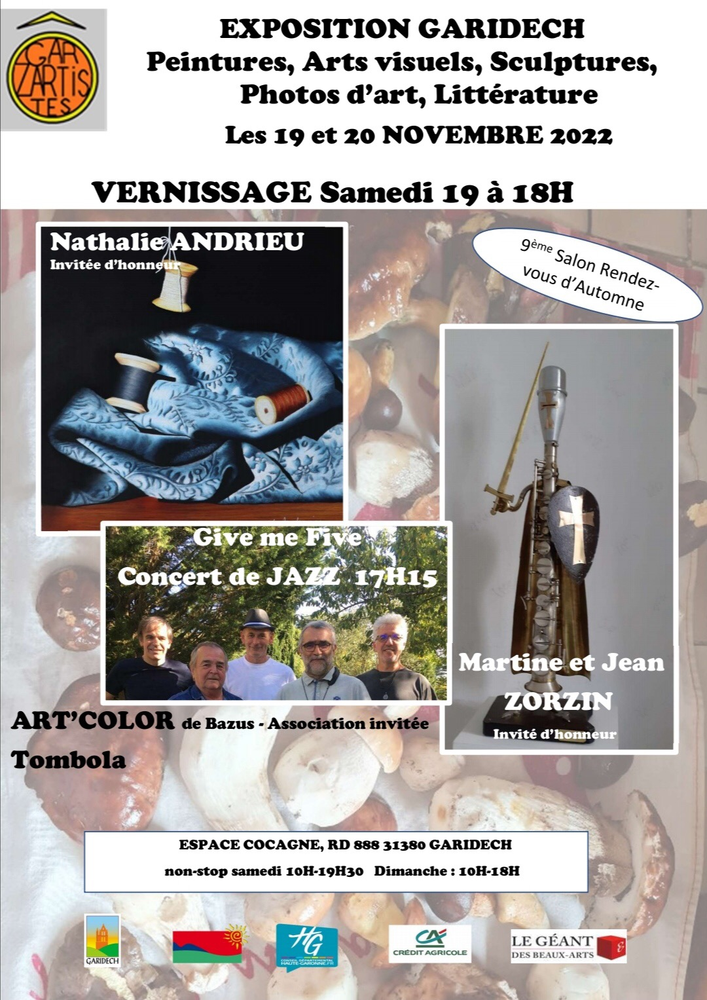

A VENIR




• Delilah (Victor Young played by Clifford Brown and Max Roach)
écouter
• Amsterdam after dark (George Coleman)
• So do it (Wes Montgomery)
• Ghetto lights (Andrew Hill)
• Ceora (Lee Morgan)
• Nostalgia in times square (Charles Mingus)
• Waltz for Ruth (Charlie Haden)
• Softly, as in a morning sunrise (Sigmund Romberg)
• The jive samba (Nat Adderley)
• Stolen moments (Oliver Nelson)
• Beautiful love (Victor Young)
• Bye Bye Blackbird (Ray Henderson)
• Chitlins con carne (Kenny Burrell)
• Béatrice (Sam Rivers)
• Berkshire blues (Randy Weston)
• Ceora (Lee Morgan)
• Equinox (John Coltrane)
• Jubilation (J.J. Mance)
• That old feeling (Lew Brown / Sammy Fain)
• Whisper not (Benny Golson)
• Lady fly (Bruno Seguy)
• Envole-toi (Bruno Seguy)